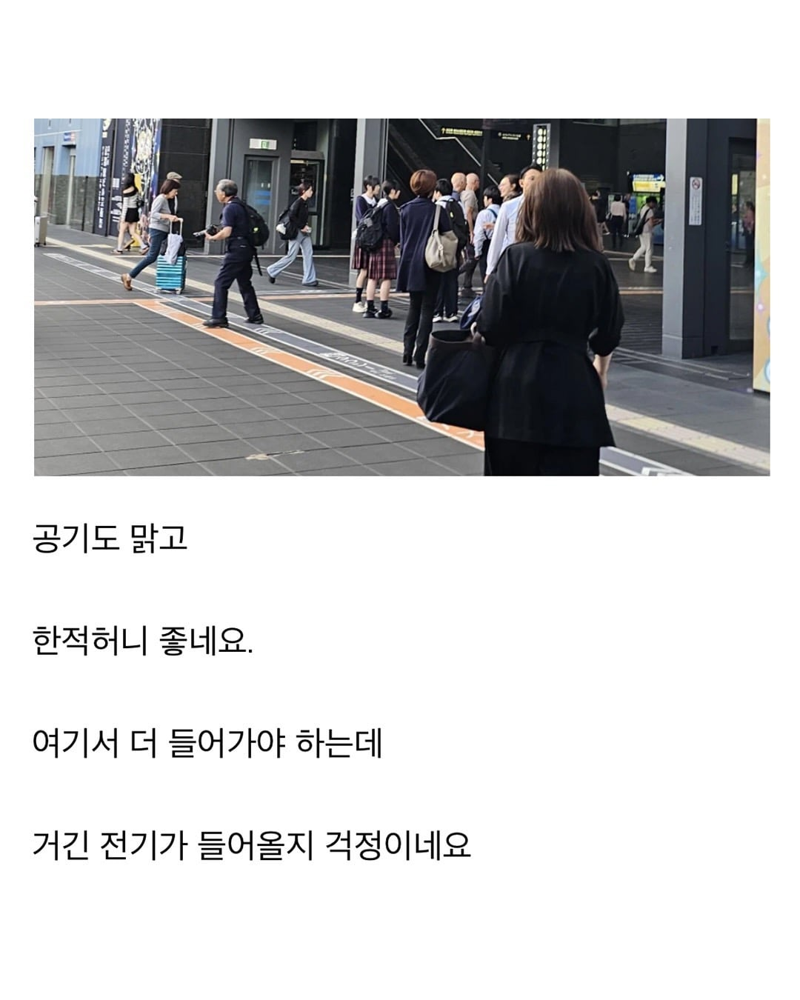
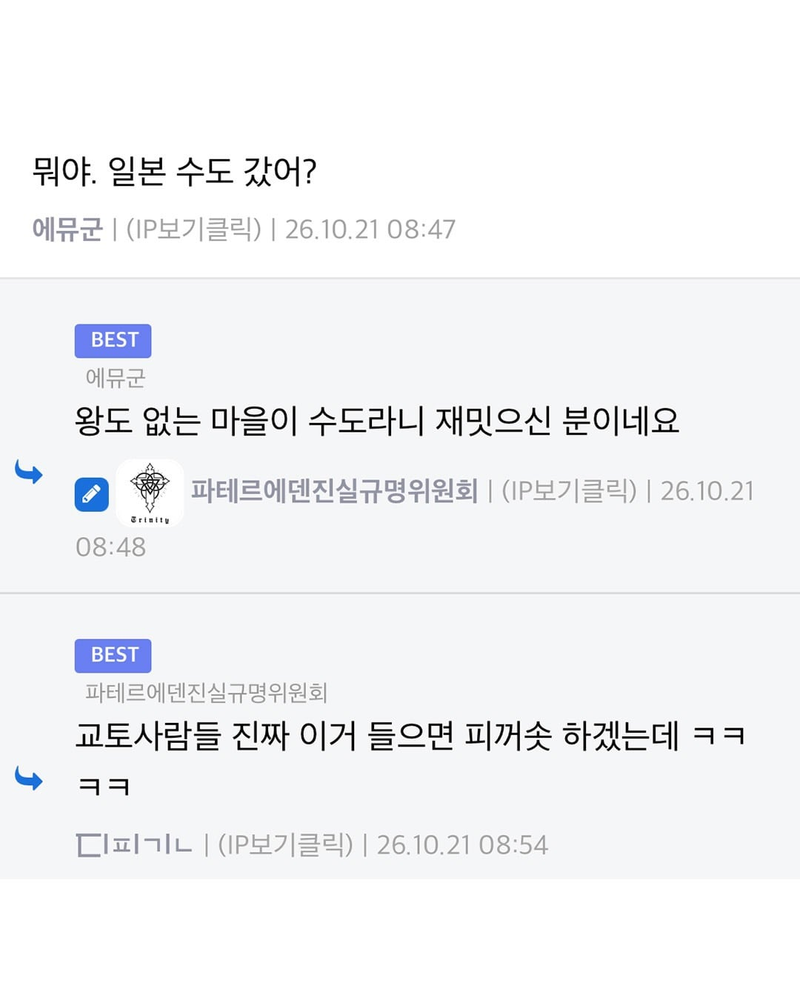
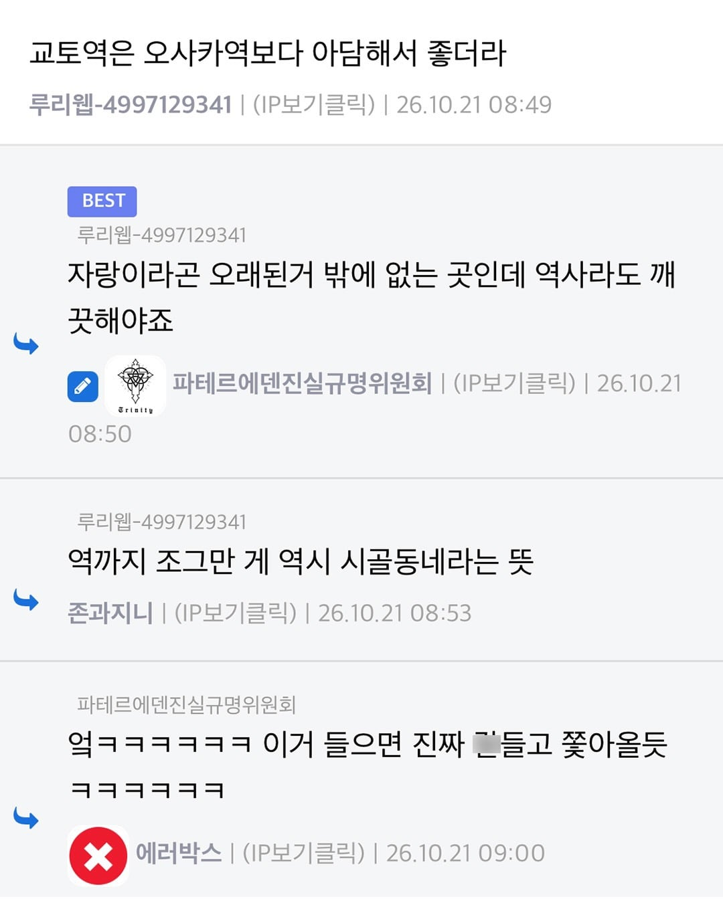

교토익 990점



교토익 990점
교노야로....
돌리는게 아니고 걍 차분하게 직진으로 찌르는거잖아 ㅋㅋㅋㅋ
교토화법이 아니라 그냥 명존쎄 화법이잖아
교토화법이 아니고 걍 공손하게만 말하는 일직선 디스잖아
일본인이 시비걸면 교토화법 모르는 척하면 된다고오~
교토화법은 저거보다 더 심하던데 아예 의도를 알 수가 없음 ㅋㅋ
비꼬는것도 진짜로 칭친인줄 아는 빡대가리들은 이미 교토에서 씨가 말랐을듯 ㅋㅋ
교토화법이라기엔 너무 직설적인데
이거는 이케즈가아니라 칼로쑤시는거고 ㅋㅋㅋ
교토화밥 아닌데. 존나 패고 잇는데.
안돌렸잖아ㅋㅋㅋㅋㅋ
충청도 사람이유????
분명 교토쪽으로 유학갔던 오사카 사람일거야
교토 화법이 뭔지 모르는 사람
잘은 몰라도 교토화법은 아는사람들끼리나 비꼬는거지
모르는사람은 욕하는지도 모르는거 아님?
저건 너무 직설적인듯
교토보다 나라가 더 오래된 거 아닌가
교토는 오래된 걸로도 2등인 곳 ㅋㅋ
충청도화법이넼
얘 분명 교토인한테 당하고 온거다